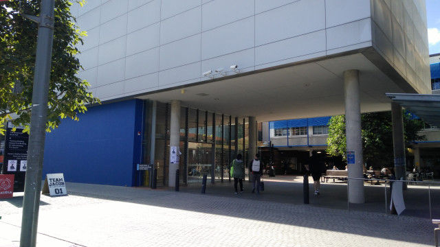
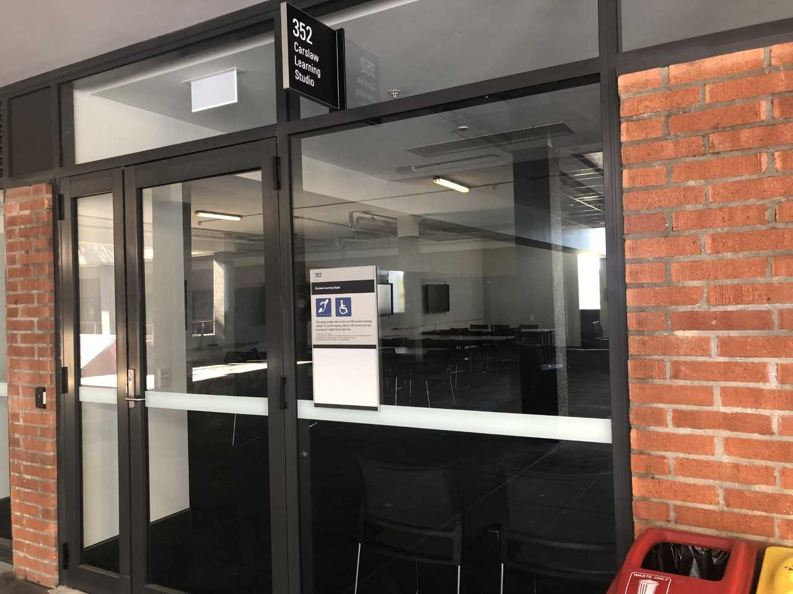
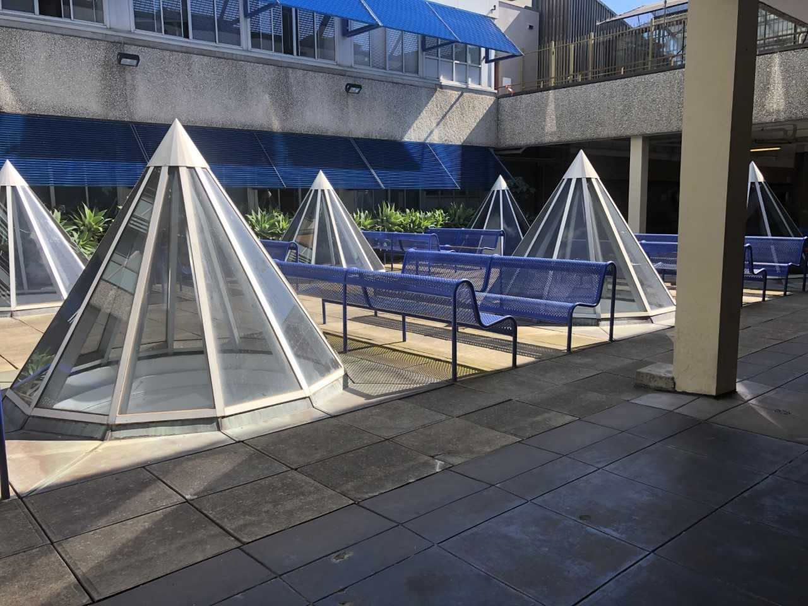

For a fourth year running, we are excited to announce another
rOpenSci
OzUnconference in 2019 held in Sydney, Australia.
We're organizing this event to bring together scientists, developers, and open data enthusiasts from academia, industry,
government, and non-profit to get together for a few days and hack on various projects.
Past projects
have related to open
data, data visualization, data publication and open science using R. To ensure a safe, enjoyable, and friendly experience
for everyone who participates, we have a strict code of conduct
and terms and conditions .
All OzUnconference ideas will begin as GitHub issues on the OzUnconf repo in the weeks before the event. However, the actual schedule will not be decided until later this year.
We are assembling an exciting team of developers and enthusiasts representing academia, industry, government, and various open source projects.
The University of Sydney - Carslaw Building
  TBA
We are extremely grateful to all the sponsors for this year's event.
We are also grateful to our fiscal sponsor, NumFOCUS.
If your organization would like to sponsor the unconf, please email John Ormerod or Steph Stammel
at
john.ormerod [at] sydney [dot] edu [dot] au
or
steph [at] rex-analytics [dot] com
for a sponsorship prospectus.